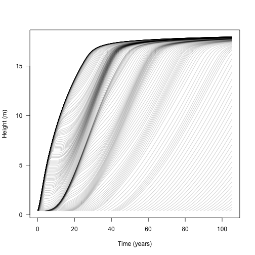
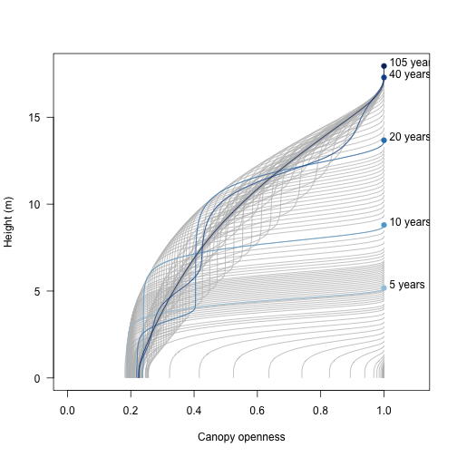
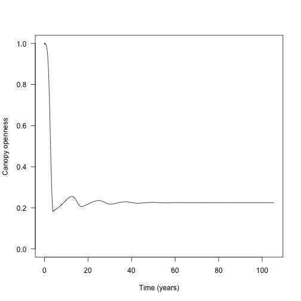
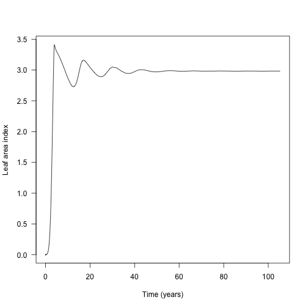
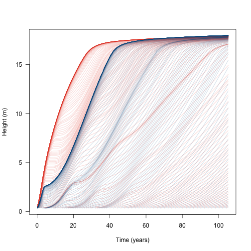
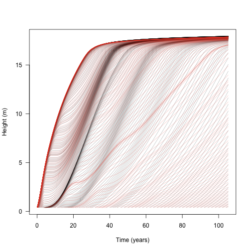
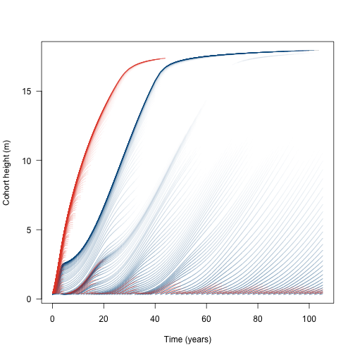
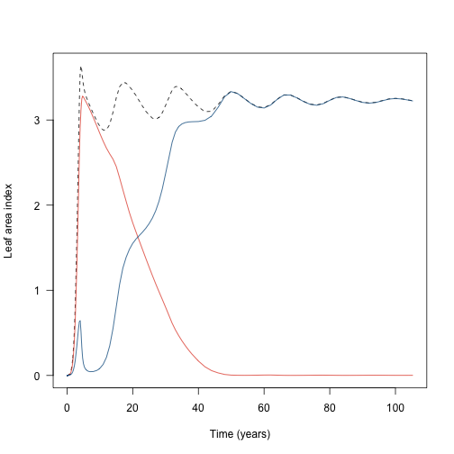
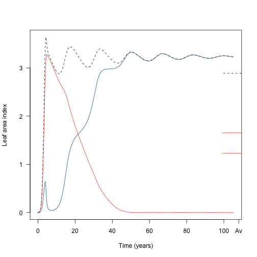

The aim here is to use plant to investigate dynamics of plants within a single patch.
library(plant)
p0 <- scm_base_parameters("FF16")
p0$control$equilibrium_nsteps <- 30
p0$control$equilibrium_solver_name <- "hybrid"
p0$disturbance_mean_interval <- 30.0First, with a single species:
Run everything out to equilibrium:
This collects information about the state of the system at every ODE step:
Entries are: * time: time of the step * species: a list with the state of each species (in this case there is only 1). The contents is a 3d array of variable / time step / cohort * light_env: a list with the points of the light environment spline (height / canopy openness) * seed_rain: output seed rain * p: input parameters
## [1] "time" "species" "light_env" "seed_rain"
## [5] "patch_density" "p"h here is two of the three dimensions of the state array; each row is a time and each column is a cohort.
## [1] 214 213So the ith row is the height of all extant cohorts in the patch (some are NA if they have not been introduced yet)
## [1] 10.2485992 10.2482823 10.2479654 10.2476483 10.2473311 10.2470138
## [7] 10.2466964 10.2463789 10.2460613 10.2455764 10.2450913 10.2446059
## [13] 10.2441202 10.2436342 10.2426616 10.2416879 10.2407131 10.2397372
## [19] 10.2387603 10.2368034 10.2348421 10.2328766 10.2309067 10.2289326
## [25] 10.2249714 10.2209928 10.2169967 10.2129830 10.2089516 10.2008353
## [31] 10.1926469 10.1843857 10.1760509 10.1676416 10.1505967 10.1332448
## [37] 10.1155797 10.0975952 10.0792849 10.0416630 10.0026648 9.9622402
## [43] 9.9203426 9.8769319 9.8319750 9.7854454 9.6875796 9.5831993
## [49] 9.4723566 9.4145938 9.3553453 9.2327455 9.1052512 8.9738718
## [55] 8.8398917 8.5692273 8.4351001 8.3032636 8.1746287 8.0498992
## [61] 7.8137910 7.5964892 7.3977024 7.2192089 7.0605443 6.9167563
## [67] 6.7854018 6.6646825 6.5531909 6.4498147 6.2636984 6.1004274
## [73] 5.9552741 5.8884229 5.8249981 5.6000828 5.5017418 5.4108713
## [79] 5.3265873 5.2481566 5.1063563 4.9809935 4.8688142 4.7675043
## [85] 4.6753646 4.5909377 4.4411792 4.3741009 4.3113747 4.1968742
## [91] 4.0949065 4.0029292 3.9194395 3.7720448 3.6447932 3.5323634
## [97] 3.4312027 3.3391155 3.1766769 3.0338193 2.9044425 2.7851320
## [103] 2.5713541 2.3754702 2.1919526 2.0198052 1.8596988 1.7156674
## [109] 1.5933398 1.4982955 1.4345562 1.4026839 1.3963969 1.3929998
## [115] 1.3863269 1.3819468 1.3769108 1.3713405 1.3653471 1.3589821
## [121] 1.3556643 1.3522573 1.3451835 1.3377756 1.3300350 1.3219608
## [127] 1.3135696 1.3048491 1.2957666 1.2863015 1.2764493 1.2662086
## [133] 1.2555801 1.2445605 1.2331284 1.2212655 1.2089375 1.1961458
## [139] 1.1692843 1.1408658 1.1108472 1.0790846 1.0111509 0.9381607
## [145] 0.8610027 0.7810595 0.6190055 0.5394430 0.4631125 0.3920458
## [151] NA NA NA NA NA NA
## [157] NA NA NA NA NA NA
## [163] NA NA NA NA NA NA
## [169] NA NA NA NA NA NA
## [175] NA NA NA NA NA NA
## [181] NA NA NA NA NA NA
## [187] NA NA NA NA NA NA
## [193] NA NA NA NA NA NA
## [199] NA NA NA NA NA NA
## [205] NA NA NA NA NA NA
## [211] NA NA NAAnd the jth column is the heights of a particular cohort, NA if that time is before it was introduced:
## [1] NA NA NA NA NA NA
## [7] NA NA NA NA NA NA
## [13] NA NA NA NA NA NA
## [19] NA NA NA NA NA NA
## [25] NA NA NA NA NA NA
## [31] NA NA NA NA NA NA
## [37] NA NA NA NA NA NA
## [43] NA NA NA NA NA NA
## [49] NA NA NA NA NA NA
## [55] NA NA NA NA NA 0.3920458
## [61] 0.3940845 0.3961303 0.3981832 0.4002432 0.4023102 0.4043843
## [67] 0.4064655 0.4085537 0.4106491 0.4127515 0.4169774 0.4212316
## [73] 0.4255141 0.4276659 0.4298247 0.4385306 0.4429258 0.4473490
## [79] 0.4518004 0.4562798 0.4653227 0.4744774 0.4837435 0.4931208
## [85] 0.5026088 0.5122071 0.5317328 0.5416593 0.5516942 0.5720869
## [91] 0.5929062 0.6141470 0.6358040 0.6803435 0.7264755 0.7741473
## [97] 0.8233033 0.8738852 0.9790879 1.0892687 1.2039391 1.3226190
## [103] 1.5701667 1.8284238 2.0942049 2.3645807 2.6368113 2.9083260
## [109] 3.1767522 3.4400192 3.6964981 3.9451054 4.0662844 4.1853367
## [115] 4.4170927 4.5298461 4.6405712 4.7493074 4.8561088 4.9610261
## [121] 5.0127900 5.0640990 5.1653609 5.2648436 5.3625902 5.4586346
## [127] 5.5529997 5.6457097 5.7367767 5.8262163 5.9140329 6.0002406
## [133] 6.0848397 6.1678365 6.2492409 6.3290463 6.4072349 6.4837859
## [139] 6.6319101 6.7733356 6.9079253 7.0354559 7.2683888 7.4702753
## [145] 7.6394324 7.7749838 7.9506277 7.9990849 8.0298924 8.0498992
## [151] 8.0651195 8.0804571 8.0995138 8.1246074 8.1571601 8.1980377
## [157] 8.2477239 8.3064331 8.3742018 8.4509581 8.5365665 8.6308407
## [163] 8.7335586 8.9633063 9.2235945 9.5120416 9.8261846 10.1635309
## [169] 10.5215634 10.8977160 11.2894251 11.6940290 12.1086542 12.5301917
## [175] 13.3806883 14.2194470 15.0235590 15.7609024 16.3438806 16.5495043
## [181] 16.7055677 16.8254066 16.9198837 17.0602076 17.1614822 17.2401404
## [187] 17.3046010 17.3595142 17.4075158 17.4501098 17.4881937 17.5223569
## [193] 17.5530716 17.5808373 17.6062259 17.6297792 17.6518790 17.6727348
## [199] 17.6924404 17.7110416 17.7285831 17.7451385 17.7608150 17.7757472
## [205] 17.7900447 17.8037763 17.8169733 17.8296591 17.8418518 17.8535793
## [211] 17.8648844 17.8758038 17.8863635 17.8931463With a single species there is always one more time step than cohort introduction, with the last two steps having the same number of cohorts. With multiple species there can be more time steps than cohort introductions, as we’ll record data every cohort introduction for either species, which will be refined to different schedules.
Individual plants increase in height with respect to time, but because they are competing the growth rate depends on the amount of shading above them, in addition to size dependent growth rate (see vignette:plant)
matplot(t, h, lty=1, col=make_transparent("black", 0.25), type="l",
las=1, xlab="Time (years)", ylab="Height (m)")
The light environment is stored over each time step:
xlim <- c(0, 1.1)
ylim <- range(data1$light_env[[length(data1$light_env)]][, "height"])
plot(NA, xlim=xlim, ylim=ylim, las=1,
xlab="Canopy openness", ylab="Height (m)")
for (i in data1$light_env) {
lines(i[, "canopy_openness"], i[, "height"], col="grey")
}
blues <- c("#DEEBF7", "#C6DBEF", "#9ECAE1", "#6BAED6",
"#4292C6", "#2171B5", "#08519C", "#08306B")
times <- c(5, 10, 20, 40, data1$time[[length(data1$time)]])
cols <- colorRampPalette(blues[-(1:2)])(length(times))
for (i in seq_along(times)) {
x <- data1$light_env[[which.min(abs(times[[i]] - data1$time))]]
lines(x[, "canopy_openness"], x[, "height"], col=cols[[i]])
y <- x[nrow(x), "height"]
points(1, y, pch=19, col=cols[[i]])
text(1 + strwidth("x"), y, paste(round(times[[i]]), "years"),
adj=c(0, 0))
}
The amount of light at the ground level is perhaps the most relevant metric:
y <- sapply(data1$light_env, function(x) x[1, "canopy_openness"])
plot(data1$time, y, type="l", las=1,
ylim=c(0, 1), xlab="Time (years)", ylab="Canopy openness")
The waves here are due to rounds of recruitment and self thinning. Mortality is not instantaneous, so species recruit to a density that generates a canopy that they cannot survive under.
Leaf area index is the driver that controls the canopy openness (via the light extinction coefficient p1$k_I, following exponential extinction). This is not returned by run_scm_collect so instead we need to rebuild patches using scm_patch.
Each element of the resulting list is a Patch object, the same as was observed when running the model.
lai1 <- sapply(patches1, function(x) x$area_leaf_above(0.0))
plot(data1$time, lai1, type="l", las=1, xlab="Time (years)",
ylab="Leaf area index")
If multiple species are grown at once, they compete with one another. This adds a second species – with a higher lma value than the first species – to the population and runs them until they reach equilibrium seed rain at the metapopulation level.
Then collect the patch-level dynamics:
data2 <- run_scm_collect(p2_eq)
t2 <- data2$time
h1 <- data2$species[[1]]["height", , ]
h2 <- data2$species[[2]]["height", , ]
cols <- c("#e34a33", "#045a8d")
matplot(t2, h1, lty=1, col=make_transparent(cols[[1]], .25), type="l",
las=1, xlab="Time (years)", ylab="Height (m)")
matlines(t2, h2, lty=1, col=make_transparent(cols[[2]], .25))
Alternatively we can compare the growth of species 1 by itself or with another species:
matplot(t, h, lty=1, col=make_transparent("black", .25), type="l",
las=1, xlab="Time (years)", ylab="Height (m)")
matlines(t2, h1, lty=1, col=make_transparent(cols[[1]], .25))
This shows that the additional species does not affect the growth of the initial wave of cohorts (because the second species is growing more slowly and is shorter than the first species), but subsequent waves are slowed or eliminated.
The dynamics are easier to see when coded by cohort density (some of the lines here represent cohorts at close to zero density).
Relativise the log densities onto (-4, max)
d1 <- data2$species[[1]]["log_density", , ]
d2 <- data2$species[[2]]["log_density", , ]
rel <- function(x, xmin) {
x[x < xmin] <- xmin
xmax <- max(x, na.rm=TRUE)
(x - xmin) / (xmax - xmin)
}
rd1 <- rel(d1, -4)
rd2 <- rel(d2, -4)R doesn’t seem to offer a way to plot lines that vary in colour, so this is quite roundabout using segments, shaded by the density at the first part of the line segment:
n <- length(t2)
x <- matrix(rep(t2, ncol(h1)), nrow(h1))
col1 <- matrix(make_transparent(cols[[1]], rd1), nrow(d1))
col2 <- matrix(make_transparent(cols[[2]], rd2), nrow(d2))
plot(NA, xlim=range(t2), ylim=range(h1, na.rm=TRUE),
las=1, xlab="Time (years)", ylab="Cohort height (m)")
segments(x[-1, ], h2[-1, ], x[-n, ], h2[-n, ], col=col2[-n, ], lend="butt")
segments(x[-1, ], h1[-1, ], x[-n, ], h1[-n, ], col=col1[-n, ], lend="butt")
Then, the total leaf area:
Each element of the resulting list is a Patch object, the same as was observed when running the model.
patches2 <- lapply(seq_along(data2$time), scm_patch, data2)
lai2 <- sapply(patches2, function(x) x$area_leaf_above(0.0))
lai2_1 <- sapply(patches2, function(x) x$species[[1]]$area_leaf_above(0.0))
lai2_2 <- sapply(patches2, function(x) x$species[[2]]$area_leaf_above(0.0))
plot(t2, lai2, type="l", las=1, lty=2,
xlab="Time (years)", ylab="Leaf area index")
lines(t2, lai2_1, col=cols[[1]])
lines(t2, lai2_2, col=cols[[2]])
To find the average value over the metapopulation we weight by patch abundance:
metapopulation <- function(x){
plant:::trapezium(t2, x*data2$patch_density)
}
lai2_av <- metapopulation(lai2)
lai2_1_av <- metapopulation(lai2_1)
lai2_2_av <- metapopulation(lai2_2)
plot(t2, lai2, type="l", las=1, lty=2,
xlab="Time (years)", ylab="Leaf area index")
lines(t2, lai2_1, col=cols[[1]])
lines(t2, lai2_2, col=cols[[2]])
axis(4, at=lai2_av, tck=0.1, lty = 2, labels=NA)
axis(4, at=lai2_1_av, tck=0.1, col.ticks=cols[[1]], labels=NA)
axis(4, at=lai2_2_av, tck=0.1, col.ticks=cols[[1]], labels=NA)
axis(1, at=108, labels="Av")